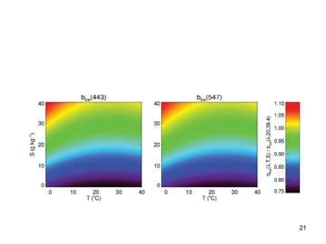
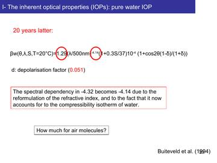
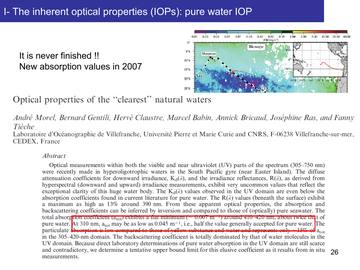

Home › B · Pure water
Water itself absorbs and scatters. In the clearest waters it dominates; everywhere else it is the baseline to which the other constituents are added (additivity). This module covers the pure-water VSF formulas of the lecture, their spectral dependence and the uncertainty on a_w.
Scattering by pure water
Pure water scatters because its molecules move: density, and therefore the refractive index, fluctuate on scales much smaller than the wavelength (Einstein–Smoluchowski theory). The lecture gives the fitted VSF (slide 20, Morel 1974):
and its revision after 20 years (slide 23, Buiteveld et al. 1994): 1.29, λ−4.14, δ = 0.051. The slide prints the angular term as “cos2θ”; we read it as cos²θ (see below).
Absorption by pure water
aw is low in the blue and rises quickly beyond 550 nm (slide 24, Pope & Fry 1997). In the blue and UV, data sets differ (slide 25) and the 2007 study of the clearest waters (slide 26) suggests that true values can be lower than those accepted. For scattering we can compute from physics; for absorption we depend on measurements (textbook).
Numbers (all verified in Python)
- Ratio of scattering 450 nm / 550 nm: 2.38 (−4.32), 2.30 (−4.14), 2.23 (λ⁻⁴).
- bw(500) = 2.88e-03 m⁻¹ (S = 37); 2.22e-03 m⁻¹ (S = 0): +30 %.
- Scattering length 1/bw(500, S=37) ≈ 347 m.
- bbw/bw = 0.5 for the symmetric VSF.
Worked example, quick Q&A and memory hooks
(550/450)4.32 = 2.38: blue (450 nm) pure water scatters 2.4× more than green (550 nm). With the revised exponent the factor is 2.30; the 3 % difference is smaller than the uncertainty on most field measurements.
Quick Q&A
A: Salinity (+30 % at S = 37; slide 20), temperature has a weak effect (slide 21).
A: Near 430–440 nm on slide 24.
Memory hooks
- Blue sea = molecules scatter blue (λ^−4.3) and absorb red.Biển xanh: phân tử tán xạ xanh, hấp thụ đỏ.
Lecture slides for this module (Loisel, Marine Optics)
8 slides of the lecture “Marine Optics” (H. Loisel, LOG). Numbers refer to the slide number in the file. Click a page to enlarge; browse all pages.








Exam checklist — points you must mention
- Write the Morel formula, say which parts are theory and which laboratory (slide 20).
- List the changes of Buiteveld et al. 1994 (1.29, −4.14, δ = 0.051).
- Compute a ratio of scattering at two wavelengths with the exponent.
- Sketch a_w and b_w (400–700 nm) and say where they cross.
- Say why a_w in the blue/UV is still uncertain.
- β_w ∝ λ^−4.32 (Morel 1974), λ^−4.14 (Buiteveld 1994); muối làm tăng 30 %.
- a_w cực tiểu ở vùng xanh, tăng mạnh sau 550 nm.
- Hấp thụ của nước tinh khiết ở xanh/UV vẫn còn bất định.
Practice calculations
These tools run in your browser and are checked against Python:
Lecture slides (10 slides; use ← → keys or the buttons)
Quick self-check (10 of 15 questions)
Open the full bank: 15 multiple-choice + 2 essay questions →